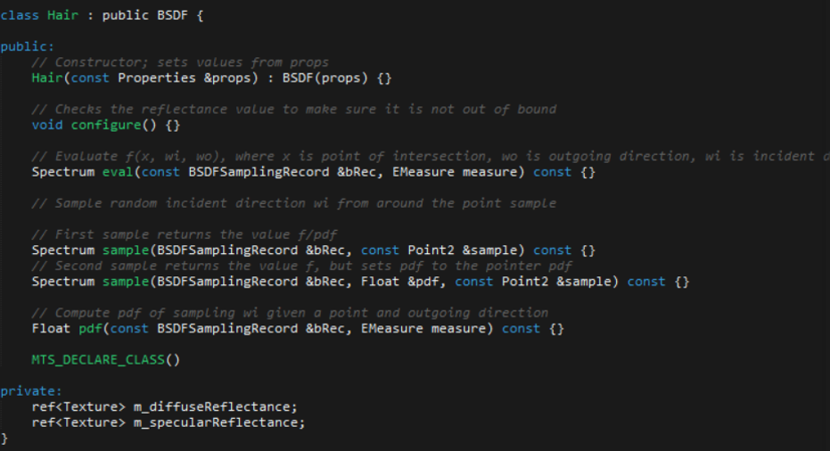
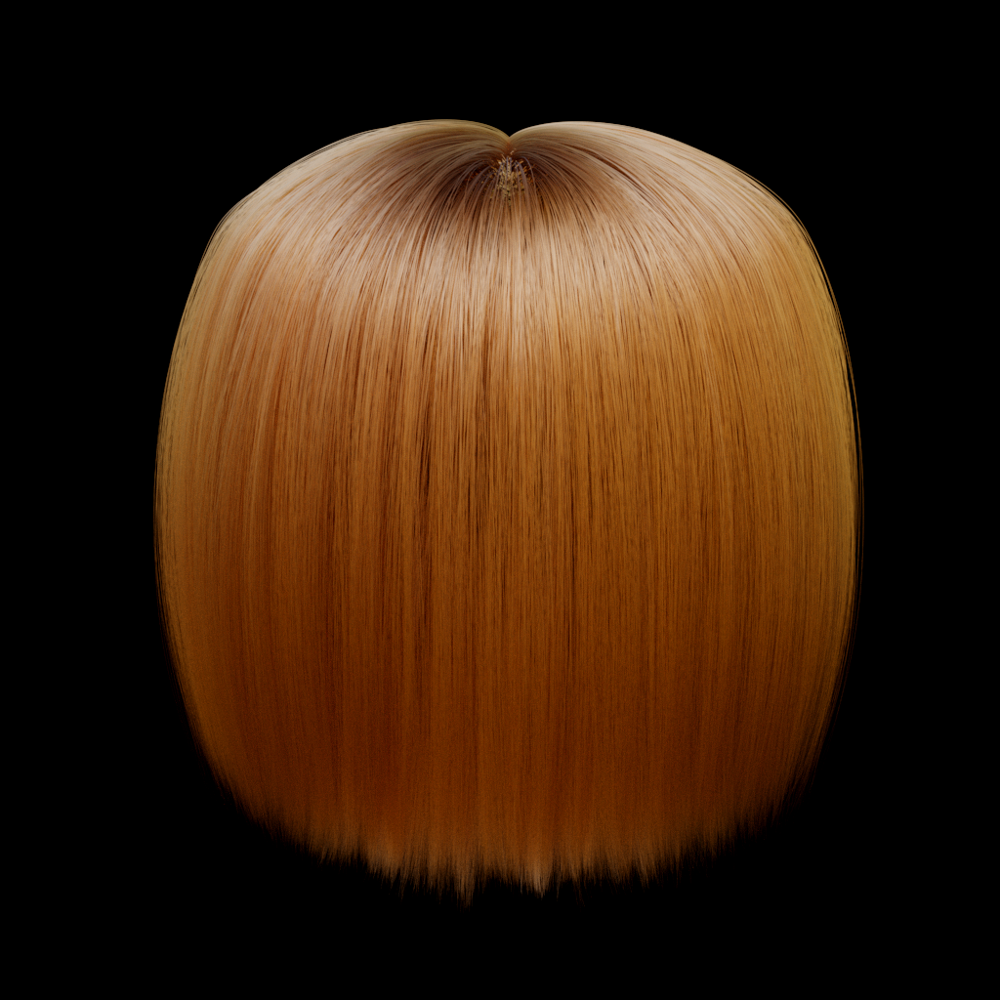

Marschner's scattering model consists of three scattering modes:
Primary highlight: The main white highlight you see in hair, characterized by a shift towards the root because of the uneven surface of the hair's scales.
Secondary highlight: The colored highlights you see on top of the primary highlights. This varies as a function of the azimuths.
Transmitted component: Forward scattering component, causes hair to be very bright when lit from behind.
Since we are using Mitsuba as our renderer, we only need to implement the hair bsdf. In terms of code, we have 6 functions we would need to write for the Hair bsdf. The skeleton for the Hair bsdf is provided below.
Constructor: takes in a Properties object and populates instance variables and sets up the configuration of the Hair bsdf.
configure(): validates the reflectance value(s) and check that they are not more than 1. If they are scale them down.
eval(): Evaluate f(x, wi, wo), where x is a sample shading point, wi and wo are incident and outgoing rays.
sample(): Returns the value f(x, wi, wo)/pdf
sample(): Returns the value f(x, wi, wo) and sets the pdf value into the given pdf pointer
pdf(): Calculates the pdf of sampling an incident direction wi given a sample shading point and an outgoing direction wo.
This is a sample rendering from Benedikt Bitterli (https://benedikt-bitterli.me/resources/). It shows hair rendered with the roughplastic bsdf, a plugin built into Mitsuba. This is the model of hair that we will be using for our project. We will change the bsdf to our custom hair bsdf.
Week 3: We will continue writing the code. At this point we should be comfortable with writing the code and being used to the development process for Mitsuba.
Week 4 : We should be finishing up code this week. We should also spend this week debugging and adding finishing touches to the model. If we finish early, we will be looking to implement d'Eon's model as well.
Light Scattering from Human Hair Fibers: http://graphics.stanford.edu/papers/hair/hair-sg03final.pdf
An Energy Conserving Hair Reflectance Model: http://www.eugenedeon.com/wp-content/uploads/2014/04/egsrhair.pdf
Wetting Effects in Hair Simulation: http://nishitalab.org/user/witawat/resources/papers/wetHair_pg2012.pdf
Mitsuba Rendrer: http://mitsuba-renderer.org/
Benedikt Bitterli hair model: https://benedikt-bitterli.me/resources/